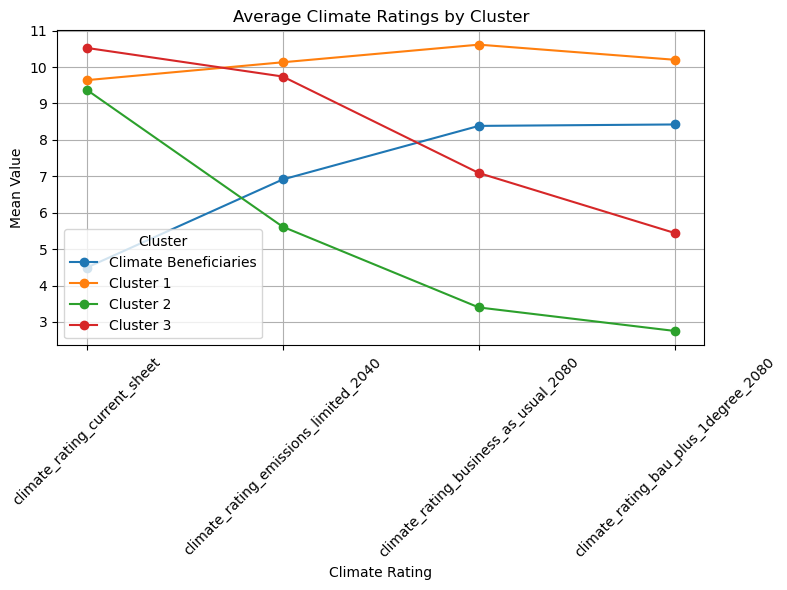

import pandas as pdimport matplotlib.pyplot as pltfrom sklearn.cluster import KMeansfrom sklearn.impute import SimpleImputerfrom sklearn.preprocessing import StandardScaler# -----------------------# Step 1: Load the data# -----------------------# Replace with your CSV filename/pathcsv_file ='data/2025-03-22_test_set.csv'# Read the CSV into a DataFrame# Adjust if needed (engine, nrows, etc.)data = pd.read_csv(csv_file)# ----------------------------------------------# Step 2: Select the relevant columns# ----------------------------------------------ratings_columns = ['climate_rating_current_sheet','climate_rating_emissions_limited_2040','climate_rating_business_as_usual_2080','climate_rating_bau_plus_1degree_2080']# Filter out rows that do not have these columnsratings_data = data[ratings_columns]# -------------------------------------------------------# Step 3: Handle missing values (impute with the mean)# -------------------------------------------------------imputer = SimpleImputer(strategy='mean')imputed_data = imputer.fit_transform(ratings_data)# --------------------------------------------------------# Step 4: Standardize the data# --------------------------------------------------------scaler = StandardScaler()scaled_data = scaler.fit_transform(imputed_data)# --------------------------------------------------------# Step 5: Apply K-Means clustering# --------------------------------------------------------kmeans = KMeans(n_clusters=4, random_state=42)cluster_labels = kmeans.fit_predict(scaled_data)data['Cluster'] = cluster_labels# Map each cluster numeric code to a descriptive namelabel_map = {0: 'Climate Beneficiaries',1: 'Cluster 1',2: 'Cluster 2',3: 'Cluster 3'}data['Cluster_Description'] = data['Cluster'].map(label_map)# --------------------------------------------------------# Step 6: Calculate the mean rating per cluster# --------------------------------------------------------cluster_means = data.groupby('Cluster_Description')[ratings_columns].mean()# --------------------------------------------------------# Step 7: Visualize cluster means with a simple line plot# --------------------------------------------------------# Each cluster will be a separate lineplt.figure(figsize=(8, 6))for cluster_name in cluster_means.index:# Extract the mean ratings for the cluster_name row = cluster_means.loc[cluster_name, ratings_columns]# Plot the means across the four rating columns plt.plot(ratings_columns, row, marker='o', label=cluster_name)plt.title('Average Climate Ratings by Cluster')plt.xlabel('Climate Rating')plt.ylabel('Mean Value')plt.legend(title='Cluster')plt.xticks(rotation=45)plt.tight_layout()plt.grid(True)plt.show()# --------------------------------------------------------# Step 8: Optional - Inspect cluster distribution# --------------------------------------------------------print("\nNumber of samples per cluster:\n", data['Cluster_Description'].value_counts())

Number of samples per cluster:
Cluster_Description
Cluster 3 1947
Cluster 1 1272
Cluster 2 797
Climate Beneficiaries 229
Name: count, dtype: int64
import pandas as pdimport matplotlib.pyplot as pltfrom sklearn.cluster import KMeansfrom sklearn.impute import SimpleImputerfrom sklearn.preprocessing import StandardScaler# -----------------------# Step 1: Load the data# -----------------------# Replace with your CSV filename/pathcsv_file ='data/2025-03-22_test_set.csv'# Read the CSV into a DataFrame# Adjust if needed (engine, nrows, etc.)data = pd.read_csv(csv_file)# ----------------------------------------------# Step 2: Select the relevant columns# ----------------------------------------------ratings_columns = ['climate_rating_current_sheet','climate_rating_emissions_limited_2040','climate_rating_business_as_usual_2080','climate_rating_bau_plus_1degree_2080']# Filter out rows that do not have these columnsratings_data = data[ratings_columns]# -------------------------------------------------------# Step 3: Handle missing values (impute with the mean)# -------------------------------------------------------imputer = SimpleImputer(strategy='mean')imputed_data = imputer.fit_transform(ratings_data)# --------------------------------------------------------# Step 4: Standardize the data# --------------------------------------------------------scaler = StandardScaler()scaled_data = scaler.fit_transform(imputed_data)# --------------------------------------------------------# Step 5: Apply K-Means clustering# --------------------------------------------------------kmeans = KMeans(n_clusters=4, random_state=42)cluster_labels = kmeans.fit_predict(scaled_data)data['Cluster'] = cluster_labels# Map each cluster numeric code to a descriptive namelabel_map = {0: 'Climate Benificiary',1: 'Climate Resilient',2: 'Highly Vulnerable Decliner',3: 'Moderately Vulnerable'}data['Cluster_Description'] = data['Cluster'].map(label_map)# --------------------------------------------------------# Step 6: Calculate the mean rating per cluster# --------------------------------------------------------cluster_means = data.groupby('Cluster_Description')[ratings_columns].mean()# --------------------------------------------------------# Step 7: Visualize cluster means with a simple line plot# --------------------------------------------------------plt.figure(figsize=(8, 6))color_map = {'Climate Benificiary': 'blue','Climate Resilient': 'green','Highly Vulnerable Decliner': 'red','Moderately Vulnerable': 'orange'}for cluster_name in cluster_means.index:# Extract the mean ratings for the cluster_name row = cluster_means.loc[cluster_name, ratings_columns]# Plot the means across the four rating columns plt.plot(ratings_columns, row, marker='o', label=cluster_name, color=color_map[cluster_name])plt.title('Average Climate Ratings by Cluster')plt.xlabel('Climate Rating')plt.ylabel('Mean Value')plt.legend(title='Cluster')plt.xticks(rotation=45)plt.tight_layout()plt.grid(True)plt.show()# --------------------------------------------------------# Step 8: Optional - Inspect cluster distribution# --------------------------------------------------------print("\nNumber of samples per cluster:\n", data['Cluster_Description'].value_counts())# --------------------------------------------------------# Step 9: Print top 10 'GenusSpecies' from two clusters# --------------------------------------------------------# We assume a column named 'GenusSpecies' exists.# Print top 10 from the 'Climate Resilient' clusterresilient_cluster = data[data['Cluster_Description'] =='Climate Resilient'].head(10)print("\nTop 10 'GenusSpecies' in Climate Resilient cluster:\n", resilient_cluster['GenusSpecies'])# Print top 10 from the 'Highly Vulnerable Decliner' clusterdecliner_cluster = data[data['Cluster_Description'] =='Highly Vulnerable Decliner'].head(10)print("\nTop 10 'GenusSpecies' in Highly Vulnerable Decliner cluster:\n", decliner_cluster['GenusSpecies'])